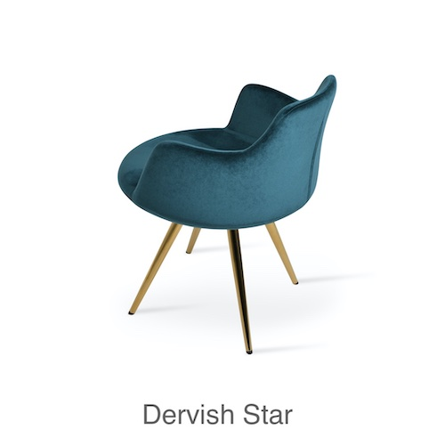

Furniture
The word bouclé is a French word, translated to English bouclé it means "curls" - this is a reference to how bouclé yarn and fabric is made, which is from many different loops or “curls”. It's this process that gives the fabric its intriguing appearance. Though it is a very heavy textile known for being incredibly soft and provides an interesting texture making for an interesting visual. Bouclé can be used in modern home decor many ways. It can be used for adding softness to seating like sofas and armchairs, or it can be added as an accent to your home decor by adding bouclé throw blankets and accent pillows to your modern furniture. Bouclé has made a comeback over the past few years to add extra touch of coziness and comfort to our modern homes.

Velvet is as nice as it is to look at as it is to touch. Adding some modern furniture to your home decor with velvet is essential to creating a complete look with a touch of elegance and luxury. You can choose to incorporate velvet in your home decor by adding velvet curtains, accent pieces like modern ottomans, or modern furniture like sohoConcept's many armchairs, dining chairs, and sofas.
At sohoConcept we believe that your style, may it be in your home, office, waiting room, restaurant or bar, should be a reflection of you and your style. That's why all of our modern furniture is designed to be customized by you. Select your fabric and colour of choice and have your modern furniture customized for you, by you. Consider adding rich retro colours like orange, browns, honey yellow, or rich greens, purples, or blues to your decor to bring it all back to the Grandmillenial style. Choose coloured velvet for your modern furniture this season.
We work with designers, architects, and developers in many sectors, our in-house manufacturing and design solutions are perfect for projects of all sizes. Learn more about sohoConcept contract for your next project or find a list of where to buy our modern furniture here. You can also contact us at any time for more information via our contact us page.
It's very easy to get overwhelmed when it comes to mixing different looks in your home. When done well, mixing modern furniture with vintage looks can look very stylish and allows you to introduce interest into your home that may mostly feature modern furniture. If you're considering adding some vintage style pieces to your home and mixing them in with your modern furniture we encourage you to consider some of our simple tips for mixing modern furniture with a vintage look, or anytime you’re mixing two different styles together.
To keep a cohesive look throughout your home you need a good balance of vintage and modern furniture. For instance, if your office space is mostly vintage with touches of modern furniture and accessories, then in your living room you may want to consider doing the opposite. This would mean rather than touches of modern, your living room would mostly be modern furniture with touches of vintage style. Many interior designers suggest 80% of your room be in one style and the other 20% be in the other style.